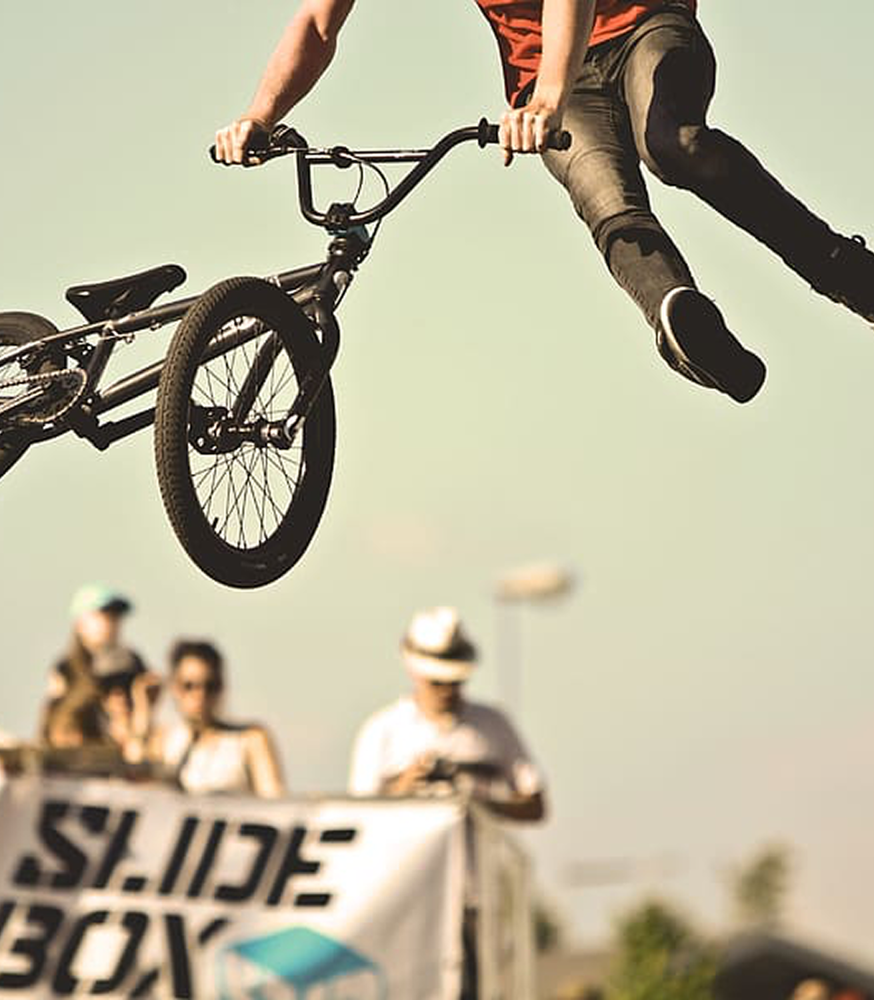

Что такое трипл?
Трипл — это трюк, при котором райдер выполняет три полных оборота в воздухе. Это движение требует идеального контроля байка и отработки стиля. Чем выше прыжок и точнее движение, тем более эффектным будет трюк.


Продвинутый
Трипл (Triple)— это сложный и зрелищный трюк BMX, в котором райдер выполняет три оборота в воздухе. Трипл овер представляет собой расширенную версию обычного овертайма, добавляя еще два оборота в движении. Для его выполнения нужно не только развивать достаточную высоту, но и чётко контролировать вращение байка. Этот трюк идеально подходит для продвинутых райдеров, готовых к сложным маневрам.
Трипл — это трюк, при котором райдер выполняет три полных оборота в воздухе. Это движение требует идеального контроля байка и отработки стиля. Чем выше прыжок и точнее движение, тем более эффектным будет трюк.
1
Стойка и подготовка:
Убедись,
что ты находишься в уверенной стойке,
с ногамии руками, готовыми к контролю движения.
Колени должны быть согнуты для большего
импульсав прыжке.
2
Прыжок и обороты:
Выполни сильный прыжок, а затем резко подними байк.
В этот момент начинай крутить его на 360 градусов,
после чего добавь еще два оборота для sвыполнения
полного трипл овер.
3
Контроль:
Во время выполнения трюка важно держать баланс
и управлять направлением байка с помощью рук и ног.
Используй ногидля стабилизации байка.
4
Приземление:
Когда трюк завершён, приземляйся на обе колеса с мягким
амортизированием, сгибая колени для поглощения удара.
для выполнения трипл райдер должен прыгать на высоту не менее 1,5 метров
среднее время для освоения трип
райдеры, которые осваивают трипл, начинают с двойного оборота